Materialdossier: Spätmittelalter
Vollständiger Inhalt des Unterrichtsdossiers · Mittelalter_Spätmittelalter.docx
Das Mittelalter: Krisen und Aufbrüche im späten Mittelalter
Das Ende der Wachstumsperiode und der Schwarze Tod
Wetterextreme, Naturkatastrophen und Tierseuchen
Im Spätmittelalter endete die lange Wachstumsperiode, die Europa ab dem Jahr 1000 erfasst hatte. Die Durchschnittstemperatur sank gegenüber dem Maximum zu Beginn des Jahrtausends deutlich ab. Dieser langfristige Temperaturrückgang führte zu folgenschweren Klimaveränderungen. Im östlichen Mittelmeerraum häuften sich schon ab Mitte des 13. Jahrhunderts ausgeprägte Dürreperioden. In West- und Mitteleuropa kam es ab 1310 zu einer deutlichen Klimaverschlechterung. Ungewöhnlich lange und kalte Winter sowie extrem niederschlagsreiche Sommer häuften sich. Die Wetterextreme führten zu grossen Ernteausfällen, drastischen Teuerungen und verheerenden Hungersnöten, die von den Obrigkeiten nicht wirksam bekämpft werden konnten. Die sinkende Bodenproduktivität und die begrenzten landwirtschaftlichen Ressourcen machten die europäischen Gesellschaften verwundbar. So starben zwischen 1315 und 1317 etwa zehn bis fünfzehn Prozent der Bevölkerung an den Folgen einer europaweiten Hungersnot und den damit verbundenen Krankheiten.
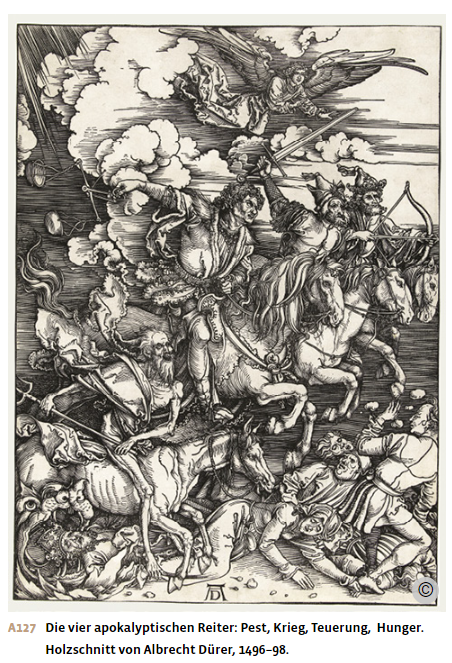
Hinzu kamen Naturkatastrophen, die regional grosse Zerstörungen anrichteten. Riesige Heuschreckenschwärme vernichteten in mehreren Jahren ganze Ernten in Mitteleuropa und lösten Untergangsängste aus. Ab 1310 breiteten sich entlang der Handelswege Tierseuchen aus, die den Viehbestand vielerorts stark dezimierten. 1342 verheerte ein Jahrhunderthochwasser die Gebiete am Rhein und an seinen Nebenflüssen. Starke Erdstösse zerstörten im Jahr 1348 Siedlungen im italienischen Friaul sowie im österreichischen Kärnten; 1356 legte ein Erdbeben die Stadt Basel und umliegende Dörfer in Trümmer. 1362 erreichte eine Sturmflut die Nordseeküste und trennte Sylt und Föhr vom Festland, englische Häfen wie Ravensburgh oder Dunwich gingen unter. Diese Katastrophen forderten nicht nur unzählige Menschenleben, sondern zerstörten auch Ackerland und Siedlungen. Der Teufelskreis aus Missernten, Teuerung, Hunger und Mangelkrankheiten verschärfte sich.
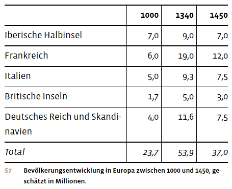
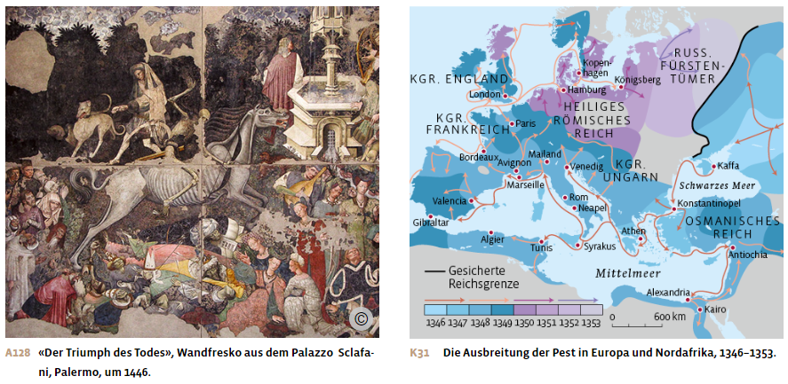
Die Pest erobert Europa
Die grösste Katastrophe des krisengeschüttelten 14. Jahrhunderts war die Pest. Die hochansteckende Infektionskrankheit breitete sich zwischen 1347 und 1353 rasch über ganz Europa aus, wenn auch nicht flächendeckend. Über die Handelswege gelangte die Pest auch in die heutige Schweiz und brach 1348/49 in den Städten des Mittellandes aus.
Am häufigsten erkrankten die Menschen an der Beulenpest, die durch Flohbisse übertragen wurde. Hohes Fieber trat auf, die Lymphknoten schwollen zu dunklen, eitrigen Beulen an und durch Blutungen bildeten sich blau-schwarze Flecken auf der Haut. Sie gaben der Krankheit den Namen Schwarzer Tod. Der Pesterreger konnte aber auch durch Tröpfcheninfektion übertragen werden und so die Lungenpest auslösen. Während bei der Lungenpest 90 bis 95 Prozent der Erkrankten starben, wird die Sterblichkeit bei der Beulenpest auf 20 bis 75 Prozent geschätzt.
Die Pestepidemie ging von Innerasien aus, wo der Erreger von Nagetieren auf den Menschen übertragen wurde. Dort war das Klima kühler und feuchter geworden, was die Ausbreitung der Krankheit ab 1331 begünstigte. Um 1338 ist die Seuche in Zentralasien nachweisbar; in den 1340er-Jahren erreichte sie das Schwarze Meer. Auf genuesischen Handelsschiffen gelangte das Pestbakterium schliesslich von der Krim nach Europa. Unter den damals herrschenden schlechten hygienischen Bedingungen wurde es vor allem von Ratten auf Flöhe und durch Flohbisse auch auf Menschen übertragen. Waren Mensch und Tier infiziert, erfolgte die Ansteckung auch über Tröpfchen, Blut und Sekret. Vor allem in den dicht besiedelten Städten breitete sich die Pest leicht aus. Dort herrschten wegen fehlender Kanalisation und ungeordneter Müllentsorgung schlechte hygienische Verhältnisse, in denen Ratten und Flöhe ideale Lebensbedingungen vorfanden.
Die Pandemie raffte in kurzer Zeit zwischen 25 und 40 Prozent der europäischen Bevölkerung dahin. Diese Schätzungen bleiben deshalb so vage, weil nur wenige Angaben zu den Bevölkerungsverlusten in den ländlichen Siedlungsgebieten vorliegen. Dort aber lebte die grosse Mehrheit der Menschen. Sicher ist, dass die Sterblichkeit in der Stadt höher war als auf dem Land. Zudem erkrankten Menschen der unteren Schichten aufgrund ihrer prekären Lebensumstände häufiger als die Angehörigen höherer Gesellschaftsschichten, die das Infektionsrisiko durch Isolation oder Flucht auf ihre Landsitze verringern konnten. Eine hohe Sterblichkeit zwischen 50 und 70 Prozent ist für speziell gefährdete Berufsgruppen belegt, etwa für Notare, die Testamente für Todkranke verfassten, oder für Geistliche, die den Sterbenden die letzte Ölung erteilten.
Dieser erste Pestzug um 1350 blieb kein einmaliges Ereignis. Vielmehr kehrte die Seuche alle zehn bis zwanzig Jahre in kleineren oder grösseren Wellen zurück und ebbte erst in den 1660er-Jahren ab.
Überforderte Medizin, ratlose Obrigkeiten
Europa war seit der Justinianischen Pest der Spätantike von der Pest verschont geblieben. So waren die Menschen im Mittelalter mit einer Seuche konfrontiert, gegen die sie keine Immunabwehr und keine wirksame Therapie besassen. Die damalige Medizin kannte die Bakterien noch nicht. Erst 1894 entdeckte der schweizerisch-französische Arzt und Bakteriologe Alexandre Yersin den hochansteckenden Pesterreger (Yersinia pestis). Die mittelalterliche Medizin führte die Pest auf göttliche Strafe sowie eine ungünstige Planetenkonstellation zurück, die schädliche Düfte, sogenannte Miasmen, erzeugten. Diese würden beim Menschen zu einem Überschuss an feucht-warmem Blut führen und damit zur «Fäulnis der Organe».
Um den Körper von den vermeintlichen Giften zu reinigen, liessen die Ärzte die Pestkranken zur Ader, verabreichten ihnen Brech- und Abführmittel oder schnitten die Pestbeulen auf. Gegen die Miasmen empfahlen sie, offene Feuer anzuzünden, Räume auszuräuchern, Duftkräuter zu verbrennen oder Rosenwasser zu versprühen. Ernährungs- und Verhaltensregeln sowie heute seltsam anmutende Arzneimixturen sollten vor der Pest schützen. Nützlich waren solche Therapien allenfalls, wenn sie den Floh- oder Lausbefall reduzierten.
In ihrer Unwissenheit reagierten Obrigkeit und Bevölkerung ratlos und zutiefst verunsichert auf die Pestpandemie. Die Kirche bot keine allgemein befriedigende Deutung der Katastrophe. Papst Clemens VI. schwankte zwischen «Gottes unerforschlichem Ratschluss» und «verdienter Strafe für die Sünden der gesamten Christenheit». Angesichts der grossen Not gewährte Clemens 1348 allen Pestkranken, die auf dem Sterbebett ihre Sünden bereuten und daraufhin starben, einen umfassenden Ablass aller Sündenstrafen. Noch radikaler brach der Bischof des englischen Bath mit der traditionellen Kirchenpraxis. Er gestattete den Todkranken, die keinen priesterlichen Beistand hatten, bei einer beliebigen Person die Beichte abzulegen. Solche Notstandsregelungen verstärkten den Autoritätsverlust der Kirche und die religiösen Zweifel, die durch die Seuche aufkamen. Um ihre Position bei den Gläubigen zu stärken, propagierte die Kirche die Verehrung von Pestheiligen. Neben den bisherigen Seuchenpatron, den heiligen Sebastian, trat neu der heilige Rochus, den die Gläubigen als Beschützer vor der Pest anrufen konnten.
Ebenso hilflos wie die Kirche zeigten sich die weltlichen Behörden. Zwar häuften sich in den von der Pest heimgesuchten Städten obrigkeitliche Erlasse und Verbote wie etwa Bestattungs- oder Strassenreinigungsvorschriften. Florenz beispielsweise sorgte für die Beseitigung des Abfalls und für andere Hygienemassnahmen, und der Grosse Rat von Venedig ordnete die Verlegung der infizierten Unterschicht auf eine abgelegene Insel an. Aber erst auf dem Höhepunkt des Massensterbens entschloss sich die Regierung zur kompletten Abriegelung ihrer Stadt. Insgesamt zeigten diese Massnahmen aber bloss geringe Wirkung bei der Bekämpfung der Seuche. Mehr Erfolg hatten die drastischen Massnahmen des Mailänder Alleinherrschers Luchino Visconti. Er liess Pestkranke in ihren Häusern einmauern und verbot Reisenden aus verseuchten Gebieten den Zutritt zur Stadt. So blieb die Stadt 1348 vom ersten Pestzug verschont. Auch im Königreich Polen gab es kein Massensterben. Hier fehlten nicht nur grosse Städte und damit wichtige Infektionszentren, sondern die Behörden versuchten auch, die Pest durch Waren- und Personensperren abzuwehren.
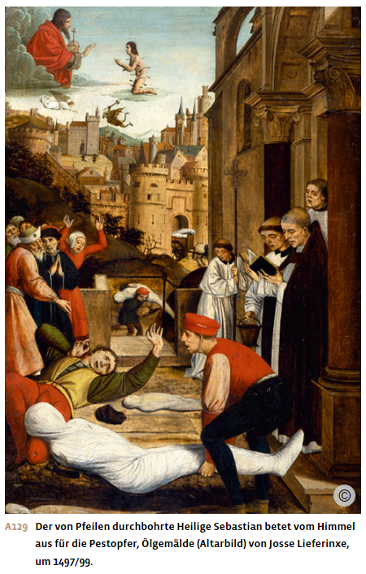
Bei späteren Pestwellen ergriffen die Obrigkeiten zunehmend Massnahmen zur Infektionskontrolle und räumlichen Distanzierung. Im Jahr 1377 verfügte der Rat der dalmatinischen Seerepublik Ragusa, des heutigen Dubrovnik, dass sich einreisende Seeleute und Händler aus Risikogebieten während dreissig Tagen auf einer Felseninsel zu isolieren hätten. Ähnliche Schutzmassnahmen führten bald darauf auch die Hafenstädte Venedig, Pisa und Genua ein. Marseille verlängerte 1383 die Frist auf 40 Tage. So entstand aus dem italienischen «quaranta», vierzig, der bis heute gebräuchliche Begriff der Quarantäne. Doch erst seit dem Ende des 15. Jahrhunderts setzten sich flächendeckend wirksame obrigkeitliche Abwehrstrategien durch: Fortan verfügten die Obrigkeiten während der Pestwellen die Schliessung der Gasthäuser, verboten Feste und Prozessionen, sperrten Häuser mit Erkrankten, richteten Pestlazarette ein und legten Pestfriedhöfe ausserhalb der Stadtmauern an.
Die Geisslerbewegung
In ihrer Verzweiflung suchten viele Menschen die Ursache der tödlichen Pest in ihrer eigenen Sündhaftigkeit. Umso häufiger besuchten sie Bittgottesdienste, nahmen an Prozessionen teil oder gingen auf Wallfahrt, um die vermeintliche Strafe Gottes von sich abzuwenden. Eine besondere Form der Busse waren die Umzüge der Geissler bzw. Flagellanten. Die Selbstgeisselung hatte als klösterliche Bussübung Tradition. In den Jahren 1348 und 1349 kam es nun als Reaktion auf die grassierende Pest zu Geisslerprozessionen von Laien, denen sich zum Teil auch Geistliche anschlossen. In Gruppen von etwa 50 Personen zogen die Geissler 33½ Tage lang durch die Region, wobei sich Phasen der Selbstgeisselung mit Beichte, Gebeten, Fürbitten und Gesängen abwechselten.
Von Österreich aus verbreitete sich diese Flagellantenbewegung massenhaft über weite Teile Europas. In den grösseren Städten fanden die Geissler oft nicht nur Unterkunft und Verpflegung, sondern auch ein grosses Publikum, das seinerseits zur Geisslerfahrt animiert wurde. Diese Laienbewegung wuchs dadurch stark an. So empfing etwa Strassburg, das von der Pest noch nicht heimgesucht worden war, etwa siebenhundert Geissler.
Das Anwachsen der Geisslerzüge erregte zunehmend das Unbehagen der kirchlichen und weltlichen Obrigkeit. 1349 verbot der Papst die Flagellanten und stellte sie unter den Verdacht der Ketzerei. In seinen Augen stellten die Geissler den Heilsanspruch der Kirche infrage, indem sie sich anmassten, als Laien zu predigen und die Beichte abzunehmen. Zudem galten die Geissler als Unruhestifter. Viele Städte schlossen daraufhin ihre Tore für die Geissler, sodass die Bewegung schliesslich abebbte.
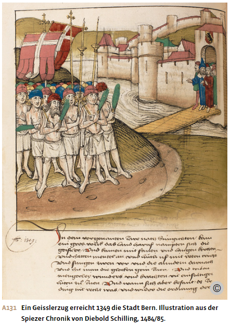
Gewalttätige Ausschreitungen gegen die jüdische Minderheit
Die Ohnmacht der Menschen angesichts der todbringenden Pest entlud sich auch in gewaltsamen Ausschreitungen gegen die jüdische Minderheit. Die Juden und Jüdinnen wurden beschuldigt, das Trinkwasser in den Brunnen vergiftet und so die Pest verursacht zu haben. In der Folge schlug die verbreitete latente Judenfeindschaft in mörderische Vernichtung um.
Zwischen 1348 und 1351 kam es in vielen Städten zu gewalttätigen Ausschreitungen, sogenannten Pogromen, bei denen grosse Teile der christlichen Bevölkerung ihre jüdischen Nachbarn verfolgten und töteten. Nicht selten ging das Morden von Vertretern der Obrigkeit aus, welche die Ermordung der jüdischen Minderheit der Stadt anordneten – oder zumindest nicht unterbanden. Denn die Pogrome boten auch die willkommene Gelegenheit, jüdisches Eigentum zu beschlagnahmen oder sich der Schulden bei jüdischen Geldverleihern zu entledigen. Bezeichnenderweise fanden viele Pogrome statt, bevor die Pestwelle den Ort erreicht hatte.
Die Verfolgungen begannen im April 1348 in der südfranzösischen Provence und breiteten sich von dort nach Norden und Osten über weite Teile Europas aus. Auch auf dem Gebiet der heutigen Schweiz kam es zu Pogromen, so im November 1348 in Solothurn und Bern, im Januar 1349 in Basel und einen Monat später in Zürich. Hier wurden alle Juden und Jüdinnen, die nicht fliehen konnten, verbrannt. Der Zürcher Rat verkaufte ihre Häuser und annullierte alle Schulden, welche die Stadt oder Private bei den Ermordeten hatten.
Die Pestpogrome bedeuteten einen tiefen Einschnitt für das jüdische Leben in Europa, das erst im 19. Jahrhundert wieder zur früheren kulturellen Blüte zurückfand. Viele jüdische Gemeinden wurden durch die Verfolgungen vollständig ausgelöscht. Im Heiligen Römischen Reich, wo sich die Pogrome konzentrierten, fand etwa ein Drittel der jüdischen Bevölkerung den Tod.
Zu den wenigen Ausnahmen unter den Territorialherren, welche die Juden schützten, gehörte Herzog Albrecht II. von Österreich, der antijüdische Pogrome in seinem Machtbereich verhinderte. Auch Papst Clemens VI. setzte sich 1348 für den Schutz der jüdischen Minderheit ein. Er verwies den Vorwurf der Brunnenvergiftung ins Reich der Legenden und drohte allen Christen mit dem Ausschluss aus der Kirche, wenn sie Juden und Jüdinnen ohne hoheitliches Urteil enteigneten oder töteten. Damit konnte er sich allerdings nur in seiner eigenen Residenzstadt Avignon durchsetzen.
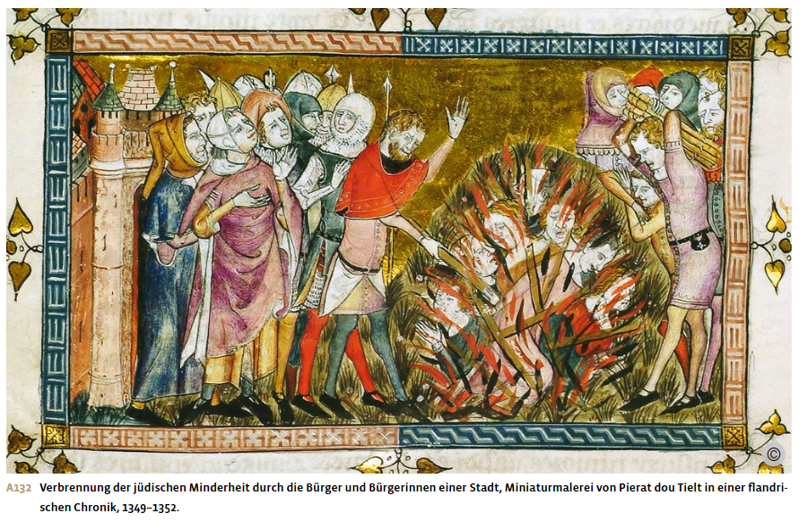
Die Auswirkungen der Krisen auf Land und Stadt
Wüstungen und neue Investitionen
Klimaverschlechterung, Pest und Abwanderung in die Städte hatten im Spätmittelalter gravierende Auswirkungen auf die Landwirtschaft und die ländliche Gesellschaft. Der Getreideanbau geriet in eine tiefe Krise. Die Kornpreise und damit die Einkünfte der Bauern und ihrer Grundherren sanken mancherorts dauerhaft und stark. Die durch wiederholte Pestwellen drastisch geschrumpfte Bevölkerung benötigte weniger Getreide, als angeboten wurde. Gleichzeitig stiegen die Produktionskosten von Betrieben, die Knechte und Mägde beschäftigten oder Personal im Tagelohn, zum Beispiel für Erntearbeiten, bezahlen mussten. Durch den Bevölkerungsrückgang wurden die Arbeitskräfte knapp und teurer.
Die Bauernfamilien erlebten diese krisenhaften Erschütterungen jedoch sehr unterschiedlich. Kleinere Höfe, die vor allem für die Selbstversorgung produzierten, waren vom Verfall der Getreidepreise kaum betroffen. Grössere bäuerliche Betriebe, die ihr Getreide auf dem Markt verkauften und die Grundrente in Geld zahlten, gerieten dagegen stärker unter Druck. Nicht selten gelang es der schrumpfenden Landbevölkerung sogar, ihre Position zu verbessern. Denn um die Abwanderung der Bauersleute in die Städte zu verhindern, sahen sich viele Grundherren gezwungen, ihnen bessere Pachtbedingungen zu gewähren.
Die Krise der Landwirtschaft führte ab etwa 1300 zu Wüstungen: Vielerorts in Europa wurden Dörfer, Einzelhöfe und landwirtschaftliche Nutzflächen wieder aufgegeben, und das Land verödete. Betroffen waren vor allem höhergelegene Gebiete wie die Mittelgebirge und die Alpen oder weiter nördlich gelegene Regionen wie Skandinavien. Dort war aufgrund der Klimaverschlechterung eine ertragreiche Landwirtschaft kaum noch möglich.
Die seit Mitte des 14. Jahrhunderts auftretenden Pestepidemien verstärkten mancherorts diesen Wüstungsprozess. Viele Überlebende wanderten vom Land in die Städte ab, wo die Pest mehr Opfer gefordert hatte und sich deshalb gute Lebenschancen für Neuankömmlinge boten. Andere Bauernfamilien verliessen abgelegene Siedlungen mit ungünstigen Boden- und Klimaverhältnissen und zogen in Dörfer, in denen Höfe mit besseren Bedingungen frei geworden waren. Auf den aufgegebenen Ackerflächen breitete sich wieder der Wald aus.
Die sinkende Nachfrage nach Getreide führte dazu, dass die stadtnahe Landwirtschaft vermehrt auf den Anbau von Garten- und Sonderkulturen setzte. Das ertragsärmere Ackerland wurde dagegen vielerorts in Viehweiden umgewandelt. Damit passten sich die Grundbesitzenden der wachsenden städtischen Nachfrage nach Fleisch und Milchprodukten an. So verbanden stark verstädterte Regionen wie etwa die Niederlande und die norditalienische Po-Ebene den Anbau von Sonderkulturen wie Obst und Gemüse mit einer auf Fleisch-, Milch- und Käseproduktion ausgerichteten Rinderhaltung. Wichtigster Fleischlieferant war damals jedoch das Schwein, das man auch in den Grossstädten frei auf der Strasse laufen liess.
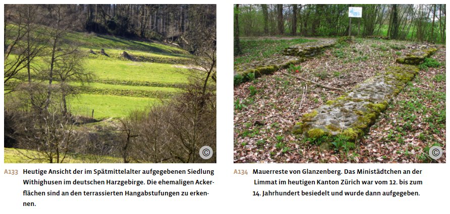
Neue Betätigungen des Adels
Die sinkenden Einnahmen aus der Eigenwirtschaft und den bäuerlichen Abgaben erschwerten es den adligen Grundherren, ihren Haushalt, ihre Luxusbedürfnisse und ihre militärische Ausrüstung zu finanzieren. Sie spürten den Wertverlust des Getreides, wenn sie dieses gegen Handelswaren eintauschten. Zudem stiegen die Preise für Waffen, Rüstung oder Kleidung, da auch im Gewerbe Arbeitskräfte fehlten. Die Grundherren erlitten zudem Abgabenausfälle, wenn Bauernstellen unbesetzt blieben oder wenn sie Abgabennachlässe gewähren mussten, um die bäuerliche Abwanderung zu stoppen. Diese Krise des Adels, entstanden durch abnehmende Erträge der Grundherrschaft, durch Erbteilungen und durch den zunehmenden Einfluss der Städte, traf vor allem Mitglieder des niederen Adels. Sie erlebten in der Folge einen sozialen Abstieg. Viele gerieten in ärmliche Verhältnisse und sahen sich gezwungen, ihre Herrschaftsrechte zu verkaufen.
Einigen Grundherren gelang es aber auch, ihren Zugriff auf die abhängige bäuerliche Bevölkerung zu verstärken, um so ihre Einkommensverluste zu kompensieren. Sie schränkten bäuerliche Freiheiten und Nutzungsrechte ein und erhöhten Abgabenlasten und Arbeitspflichten. Dagegen wehrten sich die Bauersleute vielerorts aktiv und zuweilen erfolgreich durch Arbeitsverweigerung, Flucht zu grosszügigeren Grundherren oder Abwanderung in die Städte. Mancherorts kam es auch zu Bauernaufständen, wie 1381 in England. Dort forderten die Rebellen – letztlich aber erfolglos – die Abschaffung der Leibeigenschaft, die Begrenzung der Pachtzinsen und die freie Vereinbarung der Arbeitslöhne. Die Löhne waren nämlich 1351 vom englischen Parlament eingefroren worden, um den Lohnanstieg zu bremsen und die Grundherren damit zu entlasten.
Um sich neue Einnahmequellen ausserhalb ihrer Grundherrschaft zu erschliessen, traten einige Adlige in den Dienst der Landesfürsten, die in dieser Zeit den Ausbau ihrer Territorialherrschaft vorantrieben. Sie übernahmen Kriegs- und Verwaltungsaufgaben und erhielten dafür einen jährlichen Geldbetrag oder ein Lehen. Andere Grundherren verliehen oder verpfändeten ihren Grundbesitz oder ihre Hoheitsrechte gegen eine Rente auch an wohlhabende Stadtbürger oder an städtische Einrichtungen wie Spitäler oder Klöster. Wieder andere betrieben eine geschickte Heiratspolitik, um ihre Vermögenslage zu verbessern. Auf diese Weise konnte der Adel insgesamt seine Machtstellung zwar behaupten, doch zahlreiche Landadlige und Ritter vermochten sich vom Rückgang ihrer Einkünfte nicht mehr zu erholen und verarmten.
Steigerung des Lebensstandards und handwerkliche Spezialisierung in der Stadt
Die Pest veränderte vielerorts auch das soziale Gefüge in den Städten. Teilweise starb fast die ganze Familie aus, sodass sich das Vermögen bei den wenigen Überlebenden konzentrierte. Zudem herrschte ein Mangel an Arbeitskräften, der die Löhne ansteigen liess und es Handwerksgesellen ermöglichte, sich als Meister selbstständig zu machen und etwa ein leer stehendes Haus günstig zu erwerben. Da der Zuzug vom Land in die entvölkerten Städte aufgrund der sich dort verbessernden Lebensbedingungen zunahm, konnten viele Städte bis zum letzten Drittel des 15. Jahrhunderts ihre pestbedingten Bevölkerungsverluste wieder ausgleichen. Sinkende Lebenshaltungskosten und gleichzeitig steigende Einkommen verhalfen den meisten Menschen in der Stadt zu einem besseren Lebensstandard. Das zeigte sich etwa im deutlich höheren Fleischkonsum oder in der wachsenden Nachfrage nach Gewerbegütern, vor allem Textilien. So kam es zu einem wirtschaftlichen Wiederaufschwung, der regional unterschiedlich früh begann, sich aber mit dem erneuten Bevölkerungswachstum ab etwa 1450 überall durchsetzte.
Mit der Verbesserung der wirtschaftlichen Lage stieg auch die Nachfrage nach Qualitäts- und Luxusgütern. Das alte Handwerk in den Städten passte sich der neuen Nachfrage an und entwickelte neue Berufe. Am frühesten bildeten sich Spezialberufe im Textil-, Leder- und Metallgewerbe heraus. So trennten sich etwa die Schlosser von den Schmieden und etwas später dann die Uhrmacher von den Schlossern. In der Metallverarbeitung entstanden die Berufe des Huf-, Waffen-, Kessel-, Kunst- und Goldschmieds sowie des Fingerhutmachers.
Im Zuge der handwerklichen Spezialisierung wurden auch Werkzeuge und Geräte weiterentwickelt. Diese technischen Neuerungen stiessen jedoch vielerorts auf den Widerstand der Zünfte und oft auch der Stadtregierungen, da sie bestehende Arbeitsplätze zu vernichten drohten. Langfristig setzten sie sich jedoch durch, wenn sie eine höhere Produktivität versprachen. Das war etwa bei der von einem Wasserrad angetriebenen Walkmühle der Fall. Sie diente dazu, Stoffe oder Leder geschmeidig zu klopfen oder wasserabweisend zu verfilzen und konnte bis zu vierzig Fusswalker ersetzen. Obwohl diese Mühlen im 12. und 13. Jahrhundert in verschiedenen Städten verboten war, setzte sich das mechanisierte Walken schliesslich auf breiter Front durch. Auch der Widerstand gegen das Flügelspinnrad mit Tretantrieb, das sich um 1500 verbreitete, blieb langfristig erfolglos.
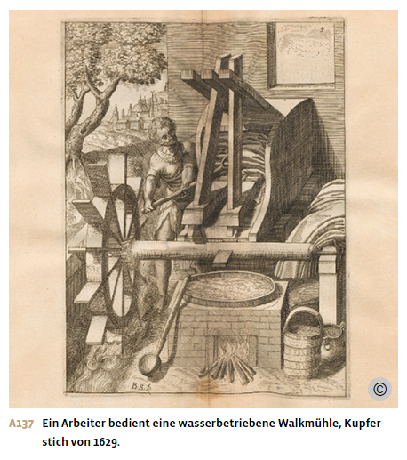
Zunahme innerstädtischer Konflikte
Abschliessung der Zünfte
Die Bereitschaft zu technischer Innovation, stärkerer Arbeitsteilung und Produktivitätssteigerung war in den meisten Gewerben nicht ausgeprägt. Viele Handwerksbetriebe gerieten deshalb unter den Druck der Kaufleute, in deren Auftrag sie produzierten. Diese drohten, die Produktion aufs Land zu verlagern oder die Waren aus der Ferne zu beschaffen, wenn die Gewerbetreibenden nicht flexibler auf die Nachfrage reagierten.
Um eine möglichst gleichmässige Auslastung seiner Betriebe zu erreichen, konzentrierte sich das Zunfthandwerk zum einen auf die Produktion von Spezial- und Luxusgütern, die ungelernte Heimwerkerinnen und Heimwerker nicht herstellen konnten. Dadurch bildeten sich neue Zünfte aus. Zum andern verstärkten die Zünfte ihre Kontrolle der gewerblichen Tätigkeit. Sie intensivierten die Preisabsprachen und schotteten sich noch stärker als bisher gegen die inner- und ausserstädtische Konkurrenz ab. Damit machten sie Front gegen die Kaufleute, die ja nicht weniger, sondern mehr Flexibilität und Wettbewerb forderten. Zudem gerieten die Zünfte damit in Konflikt mit den in die Stadt zugewanderten Unterschichten und den Handwerksgesellen. Denn diese beiden Gruppen strebten nach besseren Arbeitsbedingungen und Aufstiegschancen.
Aktionen der Handwerksgesellen
Ab dem 14. Jahrhundert schlossen sich die unselbstständigen Handwerksgesellen häufig zu Bruderschaften zusammen. Diese Gesellenvereinigungen dienten der gemeinsamen Interessenvertretung gegenüber den Meistern und strebten zum Beispiel einen schnelleren Aufstieg vom Gesellen zum vollwertigen Zunftmitglied an. Die Zünfte ihrerseits versuchten, die dadurch drohende Konkurrenz zu verhindern, indem sie in ihren Zunftordnungen oft eine mehrjährige Wanderpflicht für die Gesellen einführten und damit den ohnehin beschwerlichen Weg zum Meister noch verlängerten.
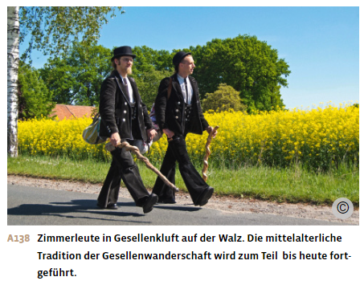
Diese Gesellenbruderschaften bildeten genauso wie die Zünfte religiöse und soziale Rituale aus, gründeten gemeinsame Kassen und erwarben Pflegeplätze im städtischen Spital, um sich so bei Krankheit, Armut oder Tod gegenseitig zu unterstützen. Je mehr sich der Meisterstand abschloss, desto mehr stärkten die Gesellen ihre eigenen Organisationen. Sie vernetzten sich überregional, tauschten sich etwa über Arbeitsbedingungen aus und verfügten über eine eigene Gerichtsbarkeit bei Verstössen gegen ihre Vereinsordnung.
Aufgrund des pestbedingten Arbeitskräftemangels gelang es den Gesellen häufig, den Zünften bessere Löhne und Arbeitsbedingungen abzutrotzen. Als besonders aktiv und selbstbewusst galten etwa die Gesellenvereine der Schuhmacher, Schneider, Bäcker, Sattler und Kürschner, der Pelzverarbeiter. Sie streikten, boykottierten missliebige Zunftmeister oder zogen zuweilen geschlossen aus der Stadt.
Die Abwehrmassnahmen der Zünfte und Städte, wie etwa Bündnis- und Versammlungsverbote für die Gesellen, blieben auf Dauer meist erfolglos, da die Zunftmeister auf die Arbeit der gut vernetzten Gesellen angewiesen waren. So musste in Strassburg die Bruderschaft der Kürschnergesellen, die 1423 nach einem Streik zur Auflösung gezwungen worden war, bereits 1428 wieder zugelassen werden. Und als die Kürschnergesellen 1470 erneut streikten, solidarisierten sich die Kürschnergesellen aus dem gesamten Oberrheingebiet mit ihnen, um den Kampf ihrer Strassburger Kollegen für bessere Arbeitsbedingungen und Berufschancen zu unterstützen.
Zunfteliten gegen das alte Patriziat
Im 14. und 15. Jahrhundert verschärften sich auch die Auseinandersetzungen um die politische Macht in der Stadt. Neue, durch Handel wirtschaftlich erfolgreiche Bürgerfamilien und Zunfteliten versuchten an der städtischen Herrschaft teilzuhaben und rivalisierten mit Angehörigen der alten patrizischen Führungselite, die ihren alleinigen Machtanspruch zu verteidigen suchten.
So kam es etwa 1336 in Zürich zu einem gemeinsamen Aufstand der Handwerker unter Führung des Ritteradels, in dessen Verlauf sich die Zünfte ihren Einsitz in der Stadtregierung erkämpften. Der tatsächliche Einfluss der Zünfte blieb in der Folge jedoch gering. Die reale politische Macht verlagerte sich wieder auf die Kaufleute und einzelne Handel treibende Handwerker. Auch in der Stadt Basel begehrten die Zünfte auf und erlangten nach einem langen, grösstenteils friedlichen Prozess 1337 den Zugang zum Rat. In St.Gallen wurden ab 1354 und in Schaffhausen ab 1411 Zunftmitglieder in die Stadtregierung aufgenommen. Auch weitere kleinere Städte öffneten sich der politischen Mitbestimmung der Zünfte.
In vielen anderen spätmittelalterlichen Städten konnte die alte patrizische Stadtregierung jedoch ihre Alleinherrschaft bewahren. So wurden etwa in Bern die Zünfte zwar vordergründig in den politischen Prozess der Regierungsbesetzung einbezogen, aber die Patrizier behielten die Kontrolle über die wichtigsten Ämter und Institutionen. Auch in Fribourg und Luzern konnte die patrizische Regierung ihre Macht weitgehend behaupten und den politischen Einfluss der Zünfte in engen Grenzen halten.
Auch in anderen Regionen des Heiligen Römischen Reiches kam es im Spätmittelalter zu vergleichbaren Unruhen und Umbrüchen im städtischen Herrschaftsgefüge. So konnte sich etwa in Augsburg 1368 vorübergehend ein Zunftregiment durchsetzen und in Braunschweig wurde 1374 die patrizische Führungsschicht sogar vertrieben oder getötet. Reine Zunftregierungen konnten sich jedoch nirgendwo auf Dauer halten. In vielen Städten mussten sich die patrizischen Grosskaufleute die Macht aber fortan mit reichen Zunftfamilien teilen.
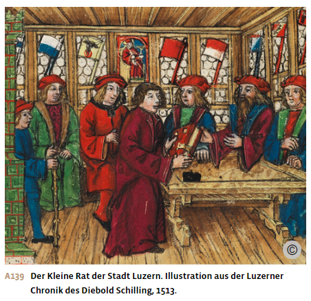
Die Städte Nord- und Mittelitaliens, die ebenfalls von inneren Konflikten zerrissen waren, gingen einen anderen Weg. Sie holten einen auswärtigen Magistraten, einen Podestà, und übertrugen ihm für ein halbes oder ganzes Jahr die oberste Gerichts- und Militärgewalt in der Stadt. Ihm zur Seite standen Richter, Notare und eine Wachmannschaft, die ebenfalls nicht aus der Stadt stammten. Nach Ablauf der Amtszeit wurde die Tätigkeit des Podestà überprüft und eventuelle Verfehlungen geahndet. Häufig übernahm der Podestà dann das gleiche Amt in einer anderen Stadt oder stellte sich zur Wiederwahl.
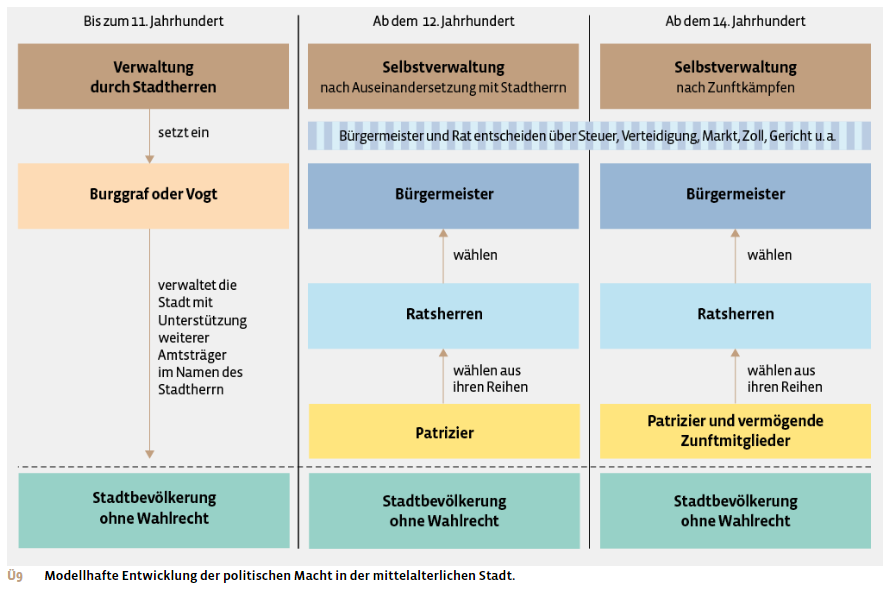
Aus: Notz, Thomas; Frey, Walter (Hg.): Geschichte fürs Gymnasium. Steinzeit bis 1450. Bern 2024, S. 364-373.